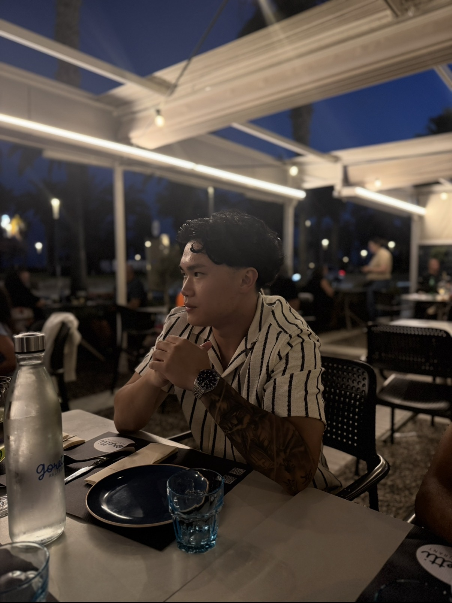

Nombre
Yeray Sun
Ubicación
Barcelona, España
Enfoque
Emprendedor
Biografía
Un poco sobre mí
Me llamo Yeray Sun. Actualmente me estoy formando en Inteligencia Artificial, un campo en constante movimiento que me exige —y me gusta— estar aprendiendo todo el tiempo.
Así es como funciono: cuando me propongo algo, no busco cumplir el mínimo, busco ir un paso más allá. Soy una persona autoexigente y con curiosidad genuina, dispuesta a meterme de lleno en cualquier reto con tal de seguir creciendo.
Aquí abajo tienes el resto de mi trayectoria.